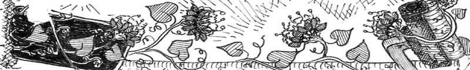

Abolition is a collective process of dismantling harmful systems and simultaneously building systems that sustain lives and livelihoods.
Technology is a tool that people use to effect change.
Abolition Technology
is a theory and practice of destroying harmful technologies and replacing them with tools that can help people change oppressive conditions and sustain life on earth.*
This website...
is dedicated to abolition technology as a concept and a course of study that includes community (and other) projects, media and discussion resources, and classroom practices.
Abolition technology is for everyone. While course was originally designed for college students, the website materials are meant to be used in whole or in part by anyone who is interested in learning (more) at the intersection of abolition and technology.
This site is also home to the Abolition Technology Resource Project, a collection of abolition technology resources (under construction).
It is maintained by Leah Namisa Rosenbloom based on joint work with Gianna Williams, and inspired by the countless abolitionist teachers who came before us.
*These working definitions are written in the spirit of Audre Lorde's "divide and conquer must become define and empower," not in the spirit of colonizers' pigeonholing of complex concepts. I encourage you to read the work of abolitionist scholars and form your own definitions.
Last updated on 13 November 2026 and typeset in namisafont (beta).
